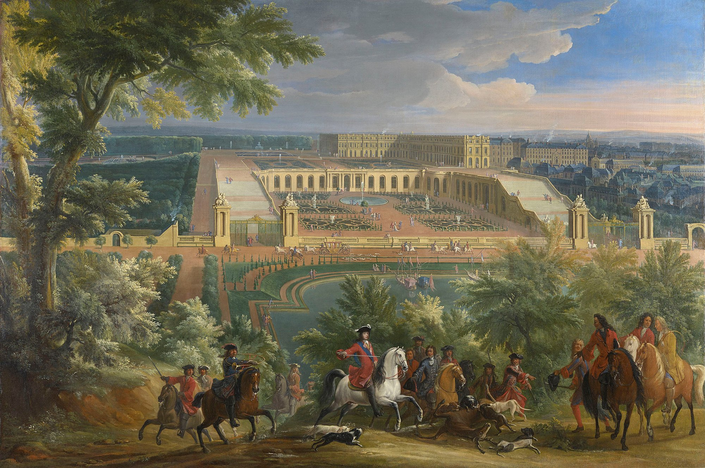

Garden Design of Versailles
Louis the XIV was recognized as the Sun King, which is displayed in the deliberate layout in the worlds most outstanding, and historic masterpiece of garden design. The landscape is engineered to the fine detail in intricately trimmed hedges, precision alignment of parterres, paths and water displays. The symmetrical geometric layout, sets the bar for the European vision of the Baroque period. Architect, Andre le Notre, designed the landscape that eventually became a French jewel of garden artistry, symbolising power with grand canals, the Parterre the Broderie, and a seemingly endless expanse of highly maintained greenery.

The Gardens of Versailles — The Ultimate Expression of French Baroque Garden Design
The Gardens of Versailles represent one of the greatest achievements in the history of European landscape architecture. Created during the reign of Louis XIV (1638–1715), known as the Sun King, the gardens became an extraordinary expression of absolute monarchy, artistic refinement, mathematical precision, and the relationship between architecture and nature. Located southwest of Paris, the Palace of Versailles was transformed from a modest royal hunting lodge into an immense royal residence and ceremonial centre. Beginning in 1661, Louis XIV commissioned an ambitious programme of landscape development that would establish Versailles as the most celebrated example of the French formal garden. The landscape was entrusted primarily to André Le Nôtre (1613–1700), the celebrated royal gardener and landscape designer whose work established the principles of the French Baroque garden. His designs were characterized by immense geometric spaces, carefully aligned pathways, elaborate parterres, ornamental fountains, sculptural compositions, and expansive vistas that appeared to extend endlessly into the surrounding countryside. The garden was not simply designed for pleasure. It was intended to communicate the authority of the monarchy. Every pathway, fountain, terrace, and clipped hedge contributed to an overarching vision of royal power. The guiding philosophy was that nature, like the kingdom itself, could be ordered, controlled, and perfected under the direction of the sovereign.
Louis XIV — The Sun King and the Symbolism of the Garden
Louis XIV's identity as the Sun King was central to the symbolism of Versailles. The sun represented Apollo, the ancient Greek and Roman god associated with light, music, poetry, and the arts. Louis XIV adopted Apollo as an important personal emblem, associating himself with the sun's central position in the heavens. This symbolism was incorporated throughout the palace and gardens. The landscape was designed around grand visual axes, with important fountains and sculptural compositions representing Apollo and the movement of the sun. The Apollo Fountain (Bassin d'Apollon) is among the most recognizable features of the gardens. It depicts Apollo emerging from the water in his chariot, drawn by horses, symbolizing the rising sun. The fountain establishes a powerful visual connection between the monarchy, classical mythology, and the natural world. The garden's immense scale reinforced the image of Louis XIV as a ruler whose authority extended across the landscape. Versailles was therefore both a royal residence and a carefully constructed political statement.
André Le Nôtre — The Master of French Formal Garden Design
André Le Nôtre was the principal designer responsible for the extraordinary landscape at Versailles. He belonged to a family of royal gardeners and developed an exceptional understanding of horticulture, architecture, geometry, surveying, and hydraulic engineering. His work combined earlier Renaissance garden traditions with a new and monumental approach to landscape design. Rather than treating the garden as a collection of individual ornamental spaces, Le Nôtre conceived the landscape as a unified composition organized around a dominant central axis.
His design principles included:
- Strong geometric organization.
- Monumental central perspectives.
- Symmetrical garden arrangements.
- Carefully proportioned parterres.
- Clipped hedges and topiary.
- Broad avenues and pathways.
- Elaborate fountains and water displays.
- Sculptural focal points.
- Terraces and descending garden levels.
- A carefully controlled relationship between architecture and distant landscape.
The resulting garden was designed to be experienced as a progression of increasingly impressive spaces. From the palace terraces, the visitor could look across ornamental parterres, fountains, bosquets, and the Grand Canal, eventually reaching the distant horizon. Perspective was one of Le Nôtre's greatest tools. He used the apparent extension of pathways and avenues to create a sense of extraordinary depth and grandeur.
The French Formal Garden — Geometry and Symmetry
The French formal garden, or jardin à la française, reached its greatest expression at Versailles. Its central philosophy was based on the belief that nature could be transformed through human ingenuity into an ordered and harmonious work of art. Unlike the more naturalistic English landscape garden that became popular in the 18th century, the French Baroque garden celebrated deliberate control over the environment. The landscape was organized through geometric shapes, straight lines, symmetrical planting, and carefully measured proportions.
The principal characteristics included:
Central Axes: Long, straight pathways established the dominant visual direction of the garden.
Symmetry: Planting beds, fountains, hedges, and architectural features were arranged in balanced compositions.
Geometric Parterres: Ornamental garden beds were divided into elaborate patterns and framed by low clipped hedges.
Terracing: Changes in elevation were carefully managed to create dramatic viewpoints and visual continuity.
Perspective: Long avenues and open spaces created the illusion of immense depth.
Repetition: Repeated trees, sculptures, fountains, and hedges reinforced the architectural rhythm.
The garden was designed to be appreciated from several perspectives, particularly from the elevated terraces of the palace, where the overall geometry could be understood as a single monumental composition.
The Parterre de Broderie — Embroidery in the Landscape
One of the most distinctive features of Versailles is the Parterre de Broderie, which translates as embroidered garden. This style of parterre takes its inspiration from the elaborate ornamental patterns found in embroidery, lacework, and decorative textiles. Low-growing evergreen hedges, particularly clipped boxwood, are arranged into intricate scrolls, arabesques, interwoven curves, and symmetrical patterns. The spaces between the clipped hedges are traditionally filled with contrasting materials such as coloured gravel, sand, or stone. The resulting composition resembles an elaborate embroidered tapestry laid across the ground.
Characteristics of the Parterre de Broderie
- Intricately clipped boxwood patterns.
- Symmetrical scrolling designs.
- Decorative arabesques and interwoven motifs.
- Contrasting gravel and stone surfaces.
- Precisely defined geometric boundaries.
- Repeated ornamental patterns.
- Carefully maintained evergreen structure.
The Parterre de Broderie was intended to be appreciated from above, particularly from palace windows and elevated terraces. It demonstrates the French Baroque fascination with precision and ornamental detail. The design requires continuous maintenance. Boxwood must be clipped regularly to preserve the sharp definition of the patterns, while gravel and surrounding surfaces must be kept clean and distinct. The result is a garden that appears almost architectural in its precision.
The Bosquets — Enclosed Garden Rooms
The bosquets, or ornamental groves, are among the most imaginative features of the Versailles gardens. These enclosed garden spaces were designed as outdoor rooms hidden within the larger landscape. From the principal avenues, the bosquets often appeared as dense masses of trees and clipped hedges. Once entered, however, they revealed elaborate interior compositions containing fountains, sculpture, architectural structures, pools, and ornamental planting. Each bosquet was designed with its own identity and atmosphere. Some were intended for music and dancing, others for theatrical entertainment, relaxation, or royal gatherings.
Notable examples include:
Bosquet de la Salle de Bal (Ballroom Grove): A theatrical garden space featuring cascading water and a semicircular arrangement of stone seating. Bosquet de la Colonnade: An elegant circular arrangement of marble columns and sculptural features. Bosquet des Trois Fontaines: A series of fountains and water displays arranged across different levels. Bosquet des Rocailles: A decorative garden setting featuring rockwork, water, and sculptural elements. The bosquets introduced an element of discovery into the otherwise highly formal landscape. They created a contrast between the expansive open perspectives of the main garden and the intimate, enclosed atmosphere of the ornamental groves.
The Grand Canal — Water as a Monumental Feature
The Grand Canal is one of the most spectacular features of the Versailles landscape. Designed by Le Nôtre, it extends the central axis of the garden into the surrounding landscape, creating an immense horizontal water feature. The canal is arranged in a cross-shaped composition, with a principal east-west section and a shorter north-south arm. Its vast proportions create an extraordinary sense of perspective.
The Grand Canal served several purposes:
- Extending the visual axis of the palace.
- Reflecting the surrounding landscape and sky.
- Providing an impressive setting for royal entertainments.
- Supporting boating and water-based recreation.
- Creating a dramatic transition between formal gardens and the wider estate.
During Louis XIV's reign, the canal became a setting for elaborate royal celebrations, including boating displays and theatrical entertainments. Its scale reinforces one of the fundamental principles of French Baroque design: the landscape should appear larger than life.
Waterworks, Fountains and Hydraulic Engineering
Water was essential to the visual and theatrical experience of Versailles. The fountains were designed to create movement, sound, reflection, and spectacle throughout the garden. However, supplying water to such an extensive landscape was an extraordinary engineering challenge. The natural water resources around Versailles were insufficient to support the original ambitions of the royal garden. Engineers developed reservoirs, pumping systems, aqueducts, and channels to transport water from surrounding areas. One of the most ambitious undertakings was the Machine de Marly, an enormous hydraulic installation constructed to raise water from the Seine River toward the Versailles water system. Despite these achievements, the water supply remained a significant limitation, and fountains were often operated selectively rather than simultaneously.
Important Fountains of Versailles
Latona Fountain
The Latona Fountain represents the mythological story of Latona and her children, Apollo and Diana. Its sculptural composition depicts the transformation of the Lycian peasants into frogs and lizards. It is positioned along the central garden axis and creates an important transition toward the Grand Canal.
Apollo Fountain
This celebrated fountain depicts Apollo emerging from the water in his sun chariot. It is a direct expression of Louis XIV's solar symbolism.
Fountain of Neptune
One of the most impressive fountain compositions at Versailles, featuring Neptune, Amphitrite, and an elaborate collection of marine figures and water jets.
Dragon Fountain
A dramatic water display featuring a dragon surrounded by mythological figures and water jets. Together, these fountains transformed the garden into a theatrical environment where mythology, engineering, and royal symbolism were inseparable.
Sculpture and Classical Mythology
Classical sculpture played an important role throughout the gardens. Figures representing gods, goddesses, nymphs, heroes, and mythological creatures were positioned along pathways, around fountains, and within ornamental groves. These sculptures were inspired by ancient Greek and Roman art and reinforced the association between the French monarchy and classical civilization. Popular mythological subjects included:
- Apollo
- Diana
- Venus
- Neptune
- Hercules
- Bacchus
- Latona
- Flora
- Nymphs and river gods
The sculptures provided visual focal points while contributing to the intellectual and symbolic meaning of the landscape. The garden became an open-air museum of classical mythology.
Trees and Architectural Planting
Trees were fundamental to the architectural structure of Versailles. Rather than allowing trees to grow without direction, Le Nôtre used them as living architectural elements. They established boundaries, framed pathways, created shaded avenues, and reinforced the symmetry of the landscape. Evergreen and deciduous species were selected according to their form, foliage, and suitability for clipping.
Important Trees and Shrubs
Yew (Taxus baccata): Used for clipped hedges, formal boundaries, and ornamental shapes.
Boxwood (Buxus sempervirens): Essential for intricate parterre patterns and low ornamental edging.
Hornbeam (Carpinus betulus): Used for clipped screens, tall hedges, and formal avenues.
Lime (Tilia): A popular avenue tree providing shade and a strong architectural canopy.
Elm (Ulmus): Historically used in formal avenues and larger landscape compositions.
Oak (Quercus): Used in woodland groves and larger parkland settings.
Cypress: Associated with Mediterranean formal landscapes and strong vertical structure.
Chestnut (Castanea and Aesculus): Used in avenues and larger ornamental landscapes, depending on species.
The Orangery and Citrus Trees
The Orangery at Versailles is another remarkable feature of the estate.
Designed by Jules Hardouin-Mansart and completed in 1686, the Orangery provided a protected environment for valuable citrus trees and other tender plants. Orange trees were particularly prized because they were associated with luxury, wealth, and the prestige of Mediterranean horticulture. During warmer months, the trees could be displayed outdoors in large decorative containers. During winter, they were moved into the sheltered Orangery.
The collection included:
- Orange trees
- Lemon trees
- Pomegranate trees
- Oleanders
- Other tender ornamental plants
The Orangery demonstrated the extraordinary resources devoted to maintaining ornamental horticulture at Versailles.
Flowers and Seasonal Planting
Flowering plants contributed seasonal colour and fragrance to the formal landscape. The garden was designed primarily around permanent architectural structure, with flowering plants providing additional seasonal interest. Flowers were cultivated in ornamental beds, containers, and selected garden spaces.
Important plants included:
- Tulips
- Hyacinths
- Narcissus
- Irises
- Roses
- Lilies
- Anemones
- Carnations
- Violets
Seasonal planting allowed the gardens to change throughout the year while maintaining their overall geometric organization.
The Parterres — Decorative Ground Patterns
Beyond the Parterre de Broderie, Versailles incorporated several distinct types of formal parterre. Each type offered a different ornamental interpretation of the French formal garden. Parterre de Broderie: Intricate embroidery-like patterns formed by clipped boxwood. Parterre de Compartiment: Divided geometric compartments containing decorative planting arrangements. Parterre de Gazon: Open lawn spaces organized within formal geometric boundaries. Parterre d'Eau: Water-based ornamental compositions incorporating basins and fountains. The parterre was intended to be viewed as a decorative carpet, particularly from the elevated palace terraces. The design emphasized the relationship between planting, architecture, and visual perspective.
The Relationship Between Garden and Palace
One of the greatest achievements of Versailles was the integration of the palace and its gardens. The architecture and landscape were conceived as parts of a single monumental composition. From the palace, visitors could look across the gardens and observe the alignment of pathways, fountains, and distant avenues. The palace itself became the starting point for the garden's entire geometric organization. The terraces acted as a transition between the built environment and the landscape beyond.
This relationship created a powerful visual hierarchy:
1. The palace as the centre of royal authority.
2. The terraces as the architectural transition.
3. The parterres as ornamental foreground.
4. The fountains and bosquets as theatrical garden spaces.
5. The Grand Canal as the dominant horizontal feature.
6. The distant landscape as an extension of the royal domain.
The entire composition was designed to communicate order, grandeur, and control.
Key Principles of Versailles and French Baroque Garden Design
Monumental Symmetry
Organize the landscape around a dominant central axis with balanced arrangements of planting, pathways, fountains, and architectural features.
Geometric Precision
Use rectangles, circles, triangles, scrolls, and other carefully measured geometric forms.
Parterre de Broderie
Create elaborate embroidered patterns using clipped boxwood and contrasting gravel.
Parterres and Topiary
Use evergreen plants as living architectural elements.
Grand Perspectives
Establish long visual corridors that extend toward distant landscape features.
Water Displays
Incorporate monumental fountains, reflecting pools, canals, and ornamental water channels.
Garden Rooms and Bosquets
Create enclosed ornamental groves that provide intimate spaces within the larger formal landscape.
Classical Sculpture
Use mythological figures, statues, urns, and fountains to create focal points.
Architectural Terracing
Use changes in elevation to establish dramatic views and connect the palace with the landscape.
Seasonal Planting
Introduce flowers, bulbs, and ornamental containers to provide changing colour throughout the year.
Formal Avenues
Plant trees in precise rows to establish strong visual direction and rhythm.
Symbolism
Use mythological imagery, scale, geometry, and elaborate water features to communicate power and prestige.
Versailles Garden Design Today — An Okanagan Interpretation
A Versailles-inspired garden can be adapted to the Okanagan by retaining the defining principles of French Baroque design while selecting plants suited to the region's hot, dry summers and cold winters. The emphasis should be placed on geometry, evergreen structure, symmetry, stonework, and controlled planting, rather than attempting to reproduce the immense scale of Versailles.
Suggested Elements
Formal Parterre
Establish a symmetrical planting arrangement using clipped boxwood or winter-hardy alternatives. Create intricate scrollwork or geometric patterns using gravel and low-growing evergreen plants.
Central Fountain
Introduce a stone fountain or reflecting basin along the main garden axis.
Formal Avenues
Use columnar junipers or suitable upright trees to create a strong architectural perspective.
Clipped Hedges
Use hardy yew, boxwood where suitable, or other evergreen alternatives to establish boundaries and garden rooms.
Ornamental Sculpture
Introduce classical-inspired statues, urns, and stone architectural features.
Rose Gardens
Use formal rose beds arranged in symmetrical patterns to introduce colour and fragrance.
Gravel Pathways
Create contrasting pale gravel pathways bordered by clipped evergreen planting.
Terraces
Use stone retaining walls and level platforms to establish different garden elevations.
Pergolas
Introduce architectural structures covered with climbing roses or grapevines.
Suggested Okanagan Gardens
| Garden element | Suggested plants | | ------------------------ | ------------------------------------------------------------ | | Low parterre edging | Boxwood, hardy alternatives | | Tall evergreen structure | Columnar juniper, yew | | Formal hedges | Yew, hornbeam, boxwood | | Flowering displays | Roses, irises, tulips | | Architectural trees | Upright junipers, hornbeam | | Citrus displays | Container-grown lemon and orange trees, overwintered indoors | | Aromatic borders | Lavender, rosemary, thyme | | Ornamental grasses | Feather reed grass, blue fescue |
The Okanagan's climate makes irrigation planning particularly important. Drip irrigation, mulching, carefully selected drought-tolerant plants, and efficient water management can help maintain a formal landscape without excessive water consumption.
The Legacy of Versailles
The Gardens of Versailles established a new standard for European landscape architecture and became the defining expression of the French Baroque garden. Their influence extended throughout Europe, inspiring royal estates, aristocratic country houses, and formal gardens in France, Germany, Austria, Russia, and beyond. The principles developed by André Le Nôtre influenced many important landscapes, including:
- Château de Vaux-le-Vicomte — An important precursor to Versailles and one of Le Nôtre's great masterpieces.
- Gardens of Chantilly — An important example of French formal landscape design.
- Schönbrunn Palace Gardens — A celebrated imperial interpretation of the Baroque garden.
- Peterhof Palace Gardens — Famous for its monumental fountains and formal garden composition.
- Herrenhausen Gardens — An outstanding example of the European Baroque formal garden.
The Enduring Vision
The significance of Versailles extends beyond its extraordinary fountains, clipped hedges, and elaborate parterres. It established the garden as a monumental work of art in which geometry, architecture, horticulture, engineering, sculpture, and symbolism were unified into one carefully orchestrated landscape. Where the Italian Renaissance garden emphasized terraces, sculpture, and the relationship between architecture and nature, the French Baroque garden expanded these ideas into an immense and carefully controlled composition. The landscape became an expression of absolute order. The legacy of Versailles is the belief that a garden can be designed as an architectural masterpiece—where every tree, pathway, hedge, fountain, and vista contributes to a single harmonious vision. The Versailles garden is ultimately a celebration of man's ability to shape nature into art, and of the grandeur, ambition, and authority of the French monarchy under Louis XIV.